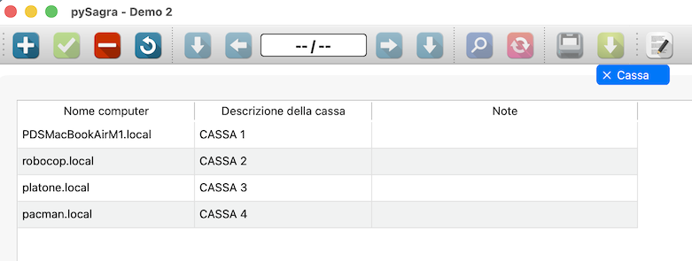

Questa scheda permette di attribuire un nome alle casse. Questo nome normalmente viene riportato sulle stampe consentendo di risalire a chi ha emesso il documento

La scheda permetta di valorizzare tre elementi:
L'attribuzione di una descrizione alla cassa è assolutamente opzionale, il programma funziona correttamente anche senza queste informazioni